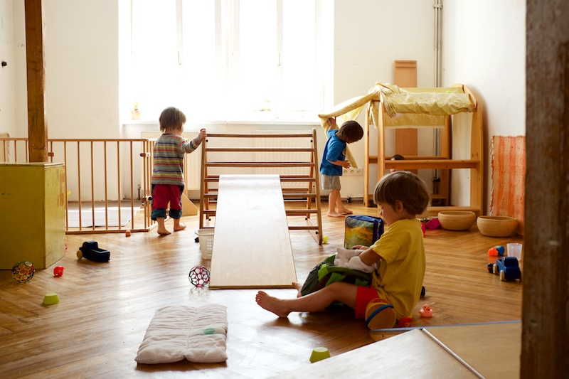
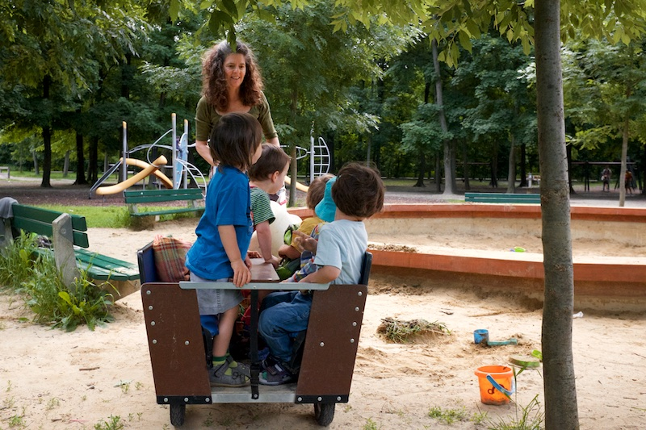

Wesentlich ist, dass das Kind möglichst viele Dinge selbst entdeckt. Wenn wir ihm bei der Lösung aller Aufgaben behilflich sind, berauben wir es gerade dessen, was für seine geistige Entwicklung das wichtigste ist.
- Emmi Pikler

Der Pikler-SpielRaum
Im Pikler-Spielraum wird eine Situation geschaffen, in der die Kinder spielen und sich bewegen können, ganz wie es ihrem momentanen Bedürfnis entspricht. Dafür benötigt es bestimmte Rahmenbedingungen. Es sind für die Kinder interessante Materialien vorbereitet. Für die Eltern sind Pölster am Rand des Raumes verteilt. Zu Beginn des Spielraumes nehmen die Eltern mit ihren Kindern dort Platz. Ab jetzt liegt die Initiative beim Kind. Manche Kinder genießen es, einfach am Schoß ihrer Mutter oder ihres Vaters zu sitzen und sich den Raum anzusehen, zu beobachten, was die anderen Kinder machen. Sie haben dafür Zeit solange sie wollen. Andere krabbeln sofort los um ein bestimmtes Ding zu erforschen und suchen nach einer Spielphase wieder den Schoß des Elternteiles auf, um sich auszuruhen, gestillt zu werden, oder einen Schluck Wasser aus einem Glas, das die Spielraumleiterin bringt zu nehmen. Es gibt auch eine Jausenzeit, in der die Kinder am Schoß der Eltern die mitgebrachte Jause essen können.
Der Spielraum gibt den Eltern die Gelegenheit, das Spiel ihrer Kinder in einer altersgemäß vorbereiteten Umgebung zu beobachten und sich daran zu erfreuen, ohne direkt eingreifen zu müssen. Sie können sich entspannen und dennoch die volle Aufmerksamkeit bei ihrem Kind lassen. Meist ist es in einem Spielraum sehr ruhig. Man kann spüren, wie die Kinder diese Ruhe genießen und wie sie bemerken, dass hier in diesem Rahmen ihre Handlungen das wichtigste sind. Es ist ein vollkommenes „im Hier und Jetzt sein“. Die Spielraumleiterin ist mit den Kindern in Kontakt und begleitet ihr Tun mit Worten. Die Eltern können erleben, wie viel ihre Kinder schon alleine können, wie sie ins Spiel finden, wie sie Entscheidungen treffen und wie sie ihr Gleichgewicht an den Pikler-Geräten erproben.
Die Bewegungselemente sind zu diesem Zweck, speziell für das Alter von ca. 6 Monaten bis 3 Jahre entwickelt worden. Es ist immer wieder sehr beeindruckend zu sehen mit welcher Umsicht die Kinder ihre Aufgabe wählen, mit welcher Geduld sie Bewegungen wiederholen. Sie sind bereit ein gewisses Risiko einzugehen und können sehr gut dosieren, welches Maß an Abenteuer ihnen angenehm und spannend erscheint.
Begleitende Elternabende
Oft bietet der Spielraum den Eltern die Möglichkeit ihr Kind anders wahrzunehmen als in der Alltagssituation und vielleicht eine neue Seite an ihm zu entdecken.
Während der Elternabende wird das Gesehene besprochen und Erfahrungen, die die Eltern mit den Kindern auch zu Hause gemacht haben, ausgetauscht. Hier ist auch Raum für kleine Selbsterfahrungsversuche um nachzuspüren, wie sich verschiedene Erlebnisse anfühlen.

Kommende Pikler-Spielraum-Termine
Ein Spielraum-Zyklus umfasst 6 Eltern-Kind-Spielräume und 3 Elternabende ohne Kinder.
Der nächste Spielraum für Kinder von 6 -10 Monaten startet
ab März 2018 jeweils Dienstag 16.30-17.30 Uhr, die begleitenden Elternabende finden Mittwoch 18.00-19.30 Uhr statt.
Wir beginnen mit einem Elternabend am Mittwoch vor dem ersten Spielraumtermin.
Kosten: 170 €
Anmeldung unter
daniela.hantsch@gmail.com oder +43 699 194 224 94